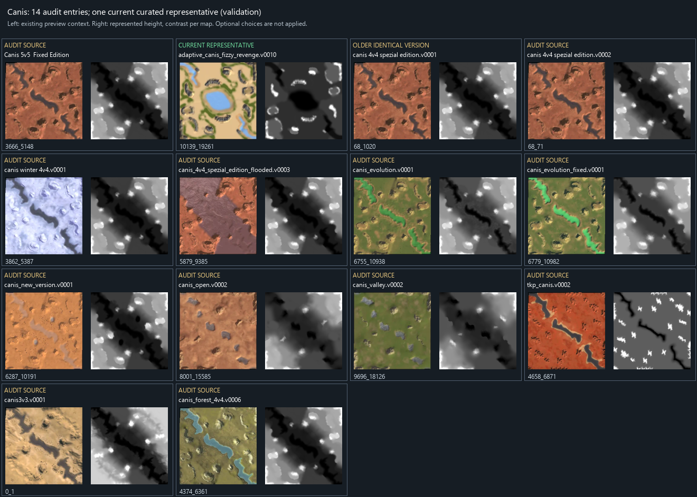

27 October 2026. Audit and proposals only: dataset membership, source files, tensors and selected checkpoints have not been changed. This is the deduplication part of EXTRACT-06b; non-square support is deferred by the owner.
| Scope | Entries | Repetition finding |
|---|---|---|
| Original atlas audit collection | 1310 | Retains versions and variants for review |
| Latest owner-kept audit pool | 1254 | 65 repeated normalized-name groups, 151 entries, 86 extra entries beyond one per name |
| Broader linked families in that kept pool | 227 entries in 84 repeated families | 143 extra entries beyond one per family |
| Eligible intersection of the existing curated terrain release and latest owner exclusions | 1111 | Zero repeated detected families; one Canis representative |
| Most recent joint-model release | 851 | 851 families; no Canis entries |
The original frozen curated terrain release has 1,117 maps. The current 1,111 eligible count applies the latest 56 owner exclusions to that role; no frozen manifest was silently rewritten. The most recent owner snapshot adds one exclusion compared with the preceding 1,255-kept snapshot.
Only two repeated vault-parent groups contain multiple actual author versions. Most other repeats are forks, renamings, adaptive/resource variants or reskins with separate vault parent IDs. Repeated names are candidates, not automatic proof of duplication. The broader links use existing source families, normalized names, prior near-height matches and the owner-confirmed Canis alias family.
| Older | Retain if that design is selected | Evidence |
|---|---|---|
Canis 4v4 Spezial Edition v1 (68_1020) |
v2 (68_71) |
Compared terrain/water, paint/material references, source/default markers, starts and reclaim fields agree |
Zeuthea Valley v5 (5865_10757) |
v6 (5865_32532) |
Same compared fields; no additional training variety established |
Both older versions were already outside the current curated role. Preferring the newer author version is justified here because the measured training fields are redundant; this is not a claim that every later fork is aesthetically or competitively better. Vault upload IDs are not used as version order.
| Representative family label | Kept source entries | Current representative |
|---|---|---|
| Adaptive Canis Fizzy Revenge | 14 | adaptive_canis_fizzy_revenge.v0010 |
| Argon - FAF Version | 6 | argon_-_faf_version.v0001 |
| Syrtis Major - FAF version | 6 | syrtis_major_-_faf_version.v0002 |
| lots of mass | 6 | SCMP_031.v0002 |
| Adaptive Tabula Rasa | 6 | adaptive_tabula_rasa.v0007 |
| Forest Gap | 5 | forest_gap.v0003 |
| Flooded Hilly plateau | 5 | flooded_hilly_plateau.v0002 |
| Oc-Tal V2 | 4 | oc-tal_v2.v0004 |
| Adaptive Pyramid | 4 | adaptive_pyramid.v0004 |
| Adaptive Twin Rivers | 4 | adaptive_twin_rivers.v0002 |
| Adaptive Crystal Open | 4 | adaptive_crystal_open.v0002 |
| Two City 5v5 | 4 | two_city_5v5.v0001 |
| Africa | 3 | Africa.v0005 |
| Darkfall | 3 | Darkfall.v0003 |
| Adaptive Fields Of Great Phoenix | 3 | adaptive_fields_of_great_phoenix.v0003 |
There are 14 Canis-related audit entries, but only Adaptive Canis Fizzy Revenge v10 (10139_19261) in the current curated terrain role. That family is assigned to validation, not training. All retained variants must stay in the same family split. Six further Canis entries occur in the wider 3,108-version annotation pool; they are outside this audit cohort and were not silently restored.

The newer Fizzy variant differs from the classic Canis family in active material references and terrain/water fields; the old sources are not fourteen byte-identical maps. This supports allowing a small amount of variety, not fourteen independent training families. The automatic diversity screen nominates canis3v3.v0001 as an optional second because it differs strongly; its key 0_1 is a valid FAF entry (parent ID zero is legitimate), verified in the 27 October live lookup with 4,574 plays. The earlier synthetic/unverified provenance concern was incorrect and is removed. That remains a comparison candidate, not a quality endorsement or approved inclusion. Classic v2, Winter and Flooded are useful alternative examples to inspect before choosing a second. The currently retained one-per-family baseline already satisfies the owner's cap.
A separate coverage issue matters: the recent 851-map joint release contains no Canis, because the retained Fizzy representative was excluded for incomplete_or_unsupported_rgb (saved RGB-valid fraction 0.893692). Avoid choosing a sole representative by version/name and then dropping the entire family when that representative lacks a required field. A future release should prefer a complete representative for the particular model role, or explicitly preserve an availability mask if that model supports one. Source paint comparison in this audit does not certify complete reconstructable RGB.
Optional second candidates break down as 45 with terrain/water differences, 7 with appearance differences without the terrain flag, and 26 with spawn/resource-only differences. Resource-only candidates should not be counted as additional terrain designs.
The screening found 15 near-duplicate pairs among 303 content comparisons. Pair counts are not counts of removable maps. Under a permissive max-two screen, 78 families have a possible second; the upper-bound candidate pool would be 1189 instead of the existing 1111. This is not a recommendation to restore all 78 or a new frozen release. Current membership remains unchanged.
Geometry was compared under eight square rotations/reflections, with vertical offsets recorded separately. Source height differences over 0.25 world units on at least 1% of cells, or water-coverage difference of at least 1%, trigger a terrain-variation screening flag. These are triage thresholds, not measured gameplay-quality grades.
Appearance comparison uses decoded source paint weights at 64px, matched by active albedo/normal paths and tiling scales rather than slot numbers. Active means at least 0.1% mean paint weight. Current-map custom assets use content hashes where resolvable. A 2% semantic paint difference triggers a texture-variation flag. It is not an RGB perceptual metric and does not certify custom shader, decal, lighting or full asset coverage; dormant palette edits do not count. Adaptive Esais Vengeance v13 has an unsupported material shader and remains explicitly unassessed for texture variety; its existing primary is retained.
Source and recorded default mex/hydro layouts and starts are compared one-to-one at 4-world-unit tolerance, after the same geometry alignment. Known reclaim totals and spatial distributions are checked at a 5% difference screen; incomplete reclaim is never treated as proven equivalence. Default resources are those from the frozen recorded analysis scenario: differences can reflect source options or selected slots, so changed scenarios must be resolved afresh before training. Symmetry-tied flat terrain can leave pose ambiguities; near-duplicate counts are conservative and are not a universal all-library copy detector.
All 227 repeated-family sources were read with zero extraction failures, covering 303 pairs. Source archives, terrain targets and SCMAP hashes were checked. The active phase-2 evidence adds starts/reclaim spatial checks and excludes unknown reclaim from near-duplicate assertions. Five tests passed: bijective marker matching, identical content, coherent rotation alignment, active material variation and resource-layout variation. Coverage, owner exclusions, maximum two family slots, preserved splits and the original phase-1 code snapshot were verified.
The initial content phase finished in 110.36 seconds. A CSV bookkeeping error after the JSON results were saved was corrected; no content extraction was repeated. The completed phase-2 exports are the active report. No source map, owner exclusion, current training manifest or checkpoint was changed.
data/processed/dataset_dedup_audit_v2/summary.json, repeated_versions.csv (227 human-readable source rows), canis_versions.csv (14 rows), family_counts.csv, proposals.csv, families.json and pairs.json. The phase-1 directory retains the pinned owner snapshot, source feature evidence and original code snapshot. Reproduce with supmapai.tools.audit_dataset_duplicates then supmapai.tools.finalize_duplicate_audit; proposals require a deliberate future dataset-release decision. Atlas receipt.
Current vault counts and all representative mismatches: 37 of 84 multi-entry families match the most-played kept member; 47 differ. Canis classic v2 has 21,910 exact-version plays versus 212 for the current Fizzy v10. Dataset selection is unchanged. Parent ID zero is valid; Canis3v3 is verified.